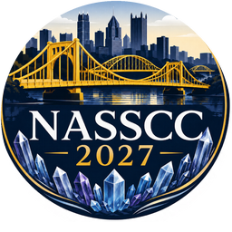
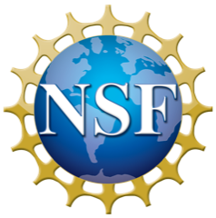

The Chamorro Lab is a quantum materials research group in the Department of Materials Science and Engineering at Carnegie Mellon University. We synthesize high-quality polycrystalline and single-crystal samples of candidate quantum materials spanning elements across the periodic table. We use X-ray and neutron scattering to study their crystallographic structure across length scales, and we measure their physical properties under variable temperature and magnetic field to understand their fundamental behavior. Our work sits at the intersection of materials science and engineering, inorganic and solid state chemistry, and condensed matter physics. We benefit from an eclectic group of researchers from diverse academic backgrounds, who bring new perspectives and insights to quantum materials research.
Interested in joining?
Undergraduates. CMU undergraduates curious about research are always welcome to get in touch.
Postdocs. We do not have a funded postdoctoral opening at the moment. Candidates with their own fellowship or funding are welcome to get in touch.
News
September 2026
Prof. Chamorro is one of the organizers of NASSCC 2027, the North American Solid State Chemistry Conference, with Profs. Jennifer Aitken (Duquesne University) and Xin Gui (University of Pittsburgh). The meeting runs July 25 to 28, 2027 at Duquesne University in Pittsburgh. More info to follow!

September 2026
Welcome to undergraduate researchers Emma Greco, T’Ana Moore, and Megan Yeager, who join the AutoFlux team for the fall.
August 2026
Welcome to graduate student Dhiya Srikanth.
July 2026
Prof. Chamorro gave an invited talk at the 2026 Solid State Chemistry Gordon Research Conference in New London, New Hampshire.
June 2026
Prof. Chamorro gave an invited talk at the 2026 Global Workshop on Quantum Materials Synthesis in Paris. Julian Marmo also presented an invited poster on AutoFlux.
Summer 2026
Welcome to NSF REU summer student Gary Zhang, visiting from the University of Illinois.
Spring 2026
Congratulations to Julian Marmo, Nicholas Shkolnikov, and Tong Wang for passing their research proficiency exams during Year 2!
February 2026
Prof. Chamorro gave invited seminars at the Penn State MRSEC and at Duquesne University Chemistry and Biochemistry.
Prof. Chamorro receives a Charles E. Kaufman Foundation New Investigator Research Grant for “Entangled spin and orbital states in transition-metal pyrochlore compounds.”
November 2025
First muon spin rotation experiment for the group, on the FLAME instrument at the Paul Scherrer Institute in Switzerland.
October 2025
First neutron and synchrotron beamtimes: total scattering on GEM at the ISIS Neutron and Muon Source, and high-resolution diffraction on 11-BM at the Advanced Photon Source.
The group’s 14 T Quantum Design PPMS DynaCool is installed in Wean Hall 4340. The instrument was funded jointly by Materials Science and Engineering, Physics, and their colleges, and is managed by our group.
September 2025
Welcome to undergraduate researchers Abby Chen, Luis Hierro, David Li, and Ryan Ngai.
August 2025
Welcome to graduate student Hayden Nuyens.
July 2025
The group receives an NSF MPS-Ascend Faculty Catalyst Award (DMR-2448807), “Toward Laboratory-Scale Autonomous Crystal Growth,” supporting AutoFlux.

May 2025
Welcome to undergraduate researcher Daniel Yin and NSF REU summer student Stanley Holewa, visiting from Cornell.
March 2025
Prof. Chamorro gave a contributed talk at the APS Global Physics Summit in Anaheim, California.
Spring 2025
Welcome to Cassius Nelson, the group’s first undergraduate researcher.
Spring 2025
The synthesis lab in Wean Hall 3314 comes online: glovebox, furnaces, and the tube-sealing station are installed.
September 2024
Welcome to the first graduate students in the group: Julian Marmo, Nicholas Shkolnikov, and Tong Wang.